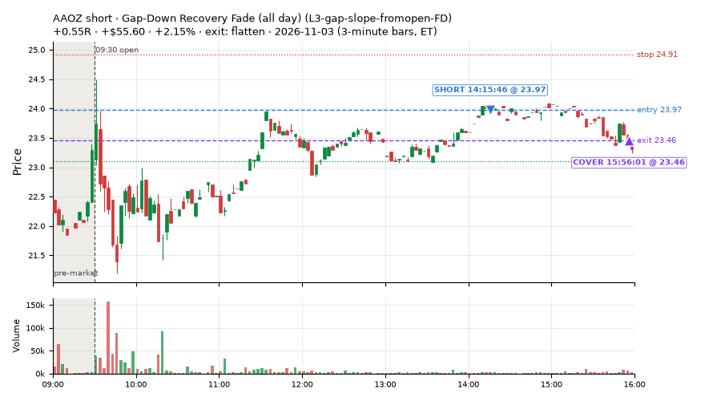
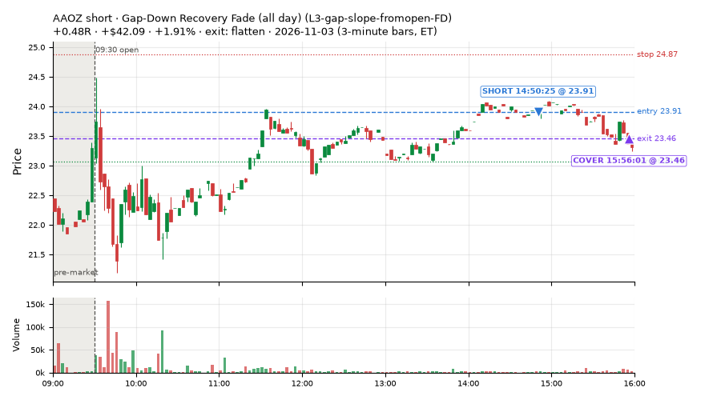
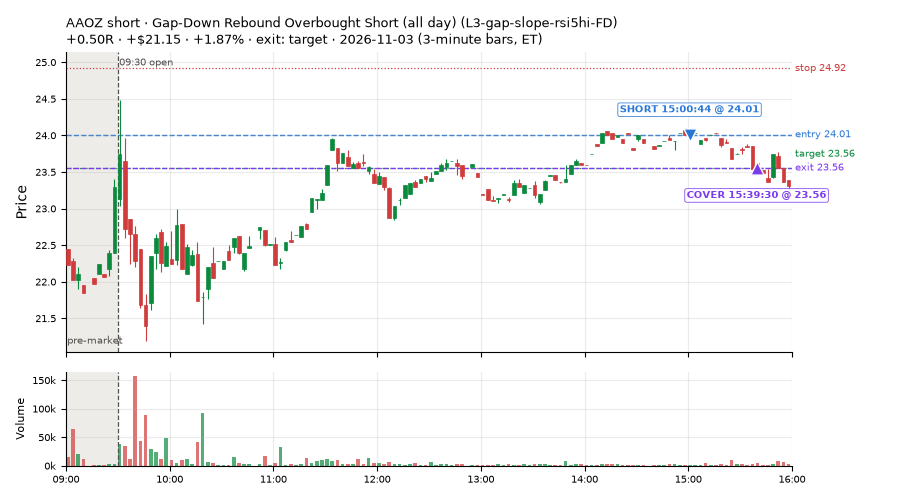
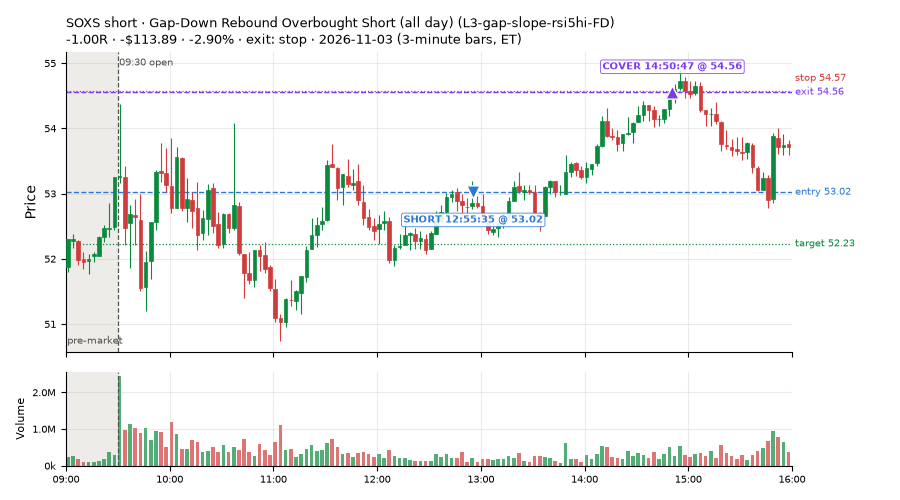
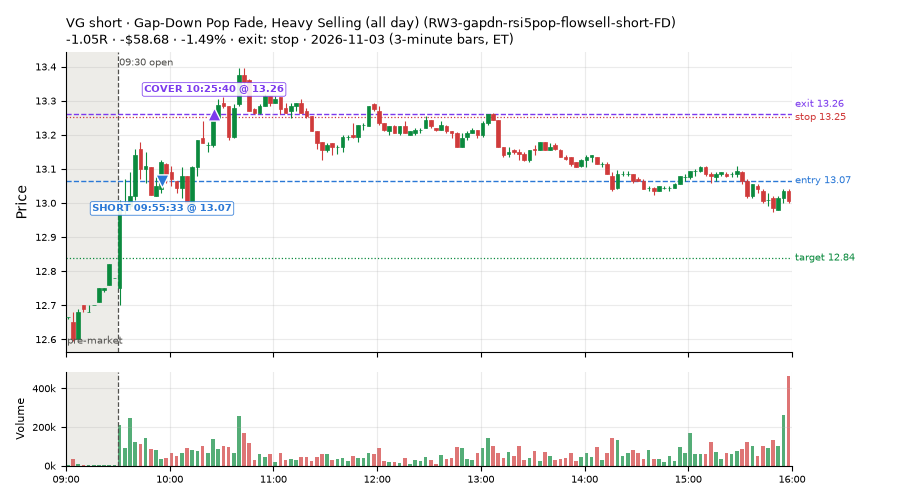
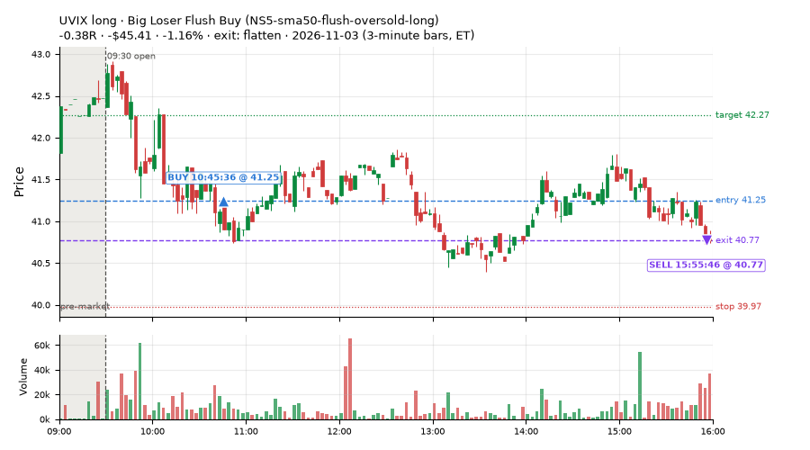
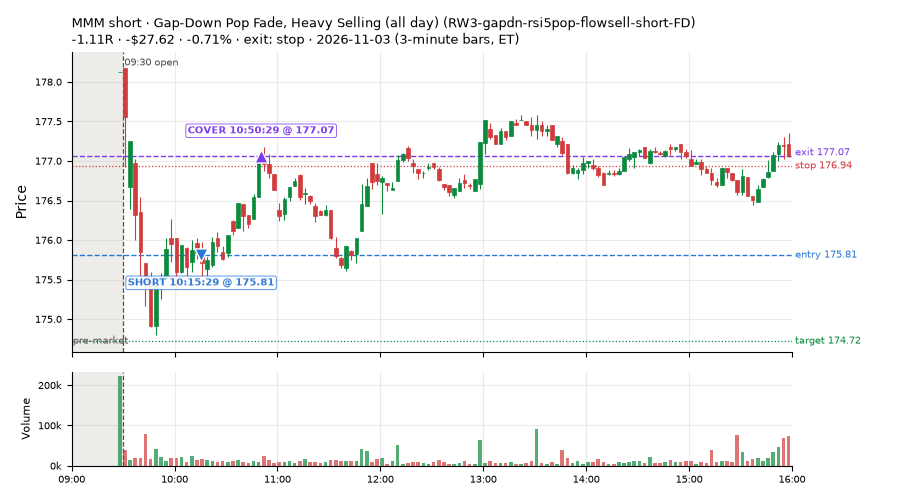
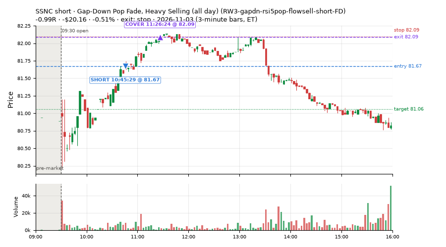

43 trades · win rate 67% · P/L $146.08
PROBATION: no live setup has passed both locked test periods. 10 owner-directed setups added 2026-10-08 (MarcoFlow top 5 + 5 new), untested live. RW6G1 (RW6 + VWAP band guard) added 2026-10-09, probation.

| Symbol | Setup | Side | In | Out | Entry | Exit | Exit reason | % gained | P/L |
|---|---|---|---|---|---|---|---|---|---|
| AAOZ | Gap-Down Recovery Fade (all day) (L3-gap-slope-fromopen-FD) | short | 14:15 | 15:56 | 23.97 | 23.46 | flatten | +2.15% | $55.60 |
| AAOZ | Gap-Down Recovery Fade (all day) (L3-gap-slope-fromopen-FD) | short | 14:50 | 15:56 | 23.91 | 23.46 | flatten | +1.91% | $42.09 |
| AAOZ | Gap-Down Rebound Overbought Short (all day) (L3-gap-slope-rsi5hi-FD) | short | 15:00 | 15:39 | 24.01 | 23.56 | target | +1.87% | $21.15 |
| Symbol | Setup | Side | In | Out | Entry | Exit | Exit reason | % lost | P/L |
|---|---|---|---|---|---|---|---|---|---|
| SOXS | L3-gap-slope-rsi5hi-FD | short | 12:55 | 14:50 | 53.02 | 54.56 | stop | -2.90% | $-113.89 |
| VG | RW3-gapdn-rsi5pop-flowsell-short-FD | short | 09:55 | 10:25 | 13.07 | 13.26 | stop | -1.49% | $-58.68 |
| UVIX | NS5-sma50-flush-oversold-long | long | 10:45 | 15:55 | 41.25 | 40.77 | flatten | -1.16% | $-45.41 |
| MMM | RW3-gapdn-rsi5pop-flowsell-short-FD | short | 10:15 | 10:50 | 175.81 | 177.07 | stop | -0.71% | $-27.62 |
| SSNC | RW3-gapdn-rsi5pop-flowsell-short-FD | short | 10:45 | 11:26 | 81.67 | 82.09 | stop | -0.51% | $-20.16 |








Signal to fill: median 2s, 90th percentile 5s (43 trades). Bars close each minute; the order follows the bar close.
Best excursion (MFE): median 0.70R; worst (MAE) median 0.48R. 9% of trades never got +0.25R in our favour; 0 reached +1R and still closed at or below 0.
| Symbol | Setup | Best R | Worst R | Closed R |
|---|---|---|---|---|
| IWB | MF2-open-rsimidhi-flowsell-FD | +0.70 | -1.05 | -1.03 |
| VG | RW3-gapdn-rsi5pop-flowsell-short-FD | +0.43 | -1.10 | -1.05 |
| SOXS | L3-gap-slope-rsi5hi-FD | +0.45 | -1.00 | -1.00 |
| MMM | RW3-gapdn-rsi5pop-flowsell-short-FD | +0.27 | -1.10 | -1.11 |
| IWB | MF4-h40-open-flowsell-FD | +0.31 | -1.01 | -1.03 |
| Entry time | Trades | Win | Avg R | P/L |
|---|---|---|---|---|
| 09:50-10:30 | 3 | 0% | -1.06 | $-91.24 |
| 10:30-11:30 | 24 | 75% | +0.43 | $154.96 |
| 11:30-13:00 | 1 | 0% | -1.00 | $-113.89 |
| 13:00-14:00 | 9 | 78% | +0.42 | $70.28 |
| 14:00-16:00 | 6 | 67% | +0.31 | $125.97 |
| Setup | Trades | Win | Avg R | Adj R (net of SPY) | P/L |
|---|---|---|---|---|---|
| Gap-Down Recovery Fade (all day) (L3-gap-slope-fromopen-FD) | 2.0 | 100% | +0.51 | +0.48 | $97.69 |
| Gap-Down Rebound Overbought Short (all day) (L3-gap-slope-rsi5hi-FD) | 2.0 | 50% | -0.25 | -0.27 | $-92.74 |
| Early Sellers, Mid-High RSI (all day) (MF2-open-rsimidhi-flowsell-FD) | 4.0 | 25% | +0.06 | -0.65 | $3.79 |
| Early Sellers, Strong Heat (all day) (MF4-h40-open-flowsell-FD) | 8.0 | 88% | +0.34 | +0.27 | $68.81 |
| Big Loser Flush Buy (NS5-sma50-flush-oversold-long) owner-directed; holdouts once: Sep-Oct -0.008R n73, Apr-Jun +0.002R n231 | 2.0 | 0% | -0.25 | -0.22 | $-56.26 |
| Gap-Down Pop Fade, Heavy Selling (all day) (RW3-gapdn-rsi5pop-flowsell-short-FD) | 7.0 | 43% | -0.16 | -0.03 | $-53.80 |
| Gap-Down Pop Fade (all day) (RW5-heat30-flowsell-rsi5pop-gapdn-short-FD) | 18.0 | 83% | +0.54 | +0.14 | $178.59 |
Market direction (SPY, beta 1) accounted for $132.01 of today's $146.08; the rest ($14.07) came from the setups themselves. Avg R net of SPY: +0.04 (incl. a hedge leg's cost; report only).
10 setups live today. Today: 173 signals, 43 taken, 6 lost because another setup held the symbol (4%). Since 2026-10-06 (21 sessions): 1774 signals, 802 taken, 101 lost to other setups (6%). Peak open positions today 23 of 77 slots. Earnings blackout removed 1842 symbols before scanning.
Simulated playing time (not live): 964 what-if trades of signals not taken, avg -0.19R, 45% winners; of them 101 lost to another setup (avg -0.06R).
Silent: intraday_momentum · Crowded out: MF4-h40-open-flowsell, MF3-open-flowsell-rsi5hi, MF5-flowsell-vwapup-rsi5hi · Starved: MF2-open-rsimidhi-flowsell
| Prio | Setup | Today sig / taken | Sessions | Signals / taken / trades | Taken/day | Expected/day | Lost to other setups | Lost to (setup n) | Top skip reasons | SIMULATED: not-taken n / avg R / win | Verdict |
|---|---|---|---|---|---|---|---|---|---|---|---|
| 1 | Gap-Down Pop Fade (all day) RW5-heat30-flowsell-rsi5pop-gapdn-short-FD | 18 / 18 | 13 | 111 / 89 / 89 | 6.85 | 12.79 | 0 | – | spread / quote / size 12, not shortable / shorts off 9, daily loss cap 1 | 22 / -0.17R / 41% | ok 34.2 entries/week |
| 2 | Gap-Down Pop Fade, Heavy Selling (all day) RW3-gapdn-rsi5pop-flowsell-short-FD | 20 / 7 | 13 | 101 / 60 / 60 | 4.62 | 13.59 | 1 | CWT14-failbrk-pdl-p10-lowvol-long 1 | not shortable / shorts off 16, daily loss cap 13, spread / quote / size 11 | 41 / +0.20R / 58% | ok 23.1 entries/week |
| 3 | Early Sellers, Mid-High RSI (all day) MF2-open-rsimidhi-flowsell-FD | 12 / 4 | 11 | 80 / 44 / 44 | 4.00 | 10.09 | 4 | RW5-heat30-flowsell-rsi5pop-gapdn-short-FD 4, RW3-gapdn-rsi5pop-flowsell-short-FD 4, MF2-open-rsimidhi-flowsell-FD 4 | not shortable / shorts off 19, spread / quote / size 13, symbol held by another setup 4 | 36 / +0.05R / 42% | ok 20.0 entries/week |
| 4 | Early Sellers, Strong Heat (all day) MF4-h40-open-flowsell-FD | 11 / 8 | 11 | 102 / 48 / 48 | 4.36 | 16.45 | 4 | RW5-heat30-flowsell-rsi5pop-gapdn-short-FD 4, RW3-gapdn-rsi5pop-flowsell-short-FD 4, MF2-open-rsimidhi-flowsell-FD 3 | not shortable / shorts off 29, spread / quote / size 17, symbol held by another setup 4 | 54 / +0.04R / 72% | ok 21.8 entries/week |
| 5 | RSI Collapse Dip Buy (all day) ST7-rsi50dn-long-pm-t1s1-FD | 0 / 0 | 7 | 15 / 10 / 10 | 1.43 | 2.17 | 0 | – | spread / quote / size 5 | 5 / +0.48R / 80% | slow 7.1 entries/week; ~8 weeks to 60 trades |
| 6 | Gap-Down Rebound Overbought Short (all day) L3-gap-slope-rsi5hi-FD | 33 / 2 | 3 | 123 / 5 / 5 | 1.67 | – | 2 | L3-gap-slope-fromopen-FD 2 | not shortable / shorts off 101, spread / quote / size 12, daily loss cap 3 | 114 / -0.35R / 46% | slow 8.3 entries/week; ~7 weeks to 60 trades |
| 7 | Gap-Down Recovery Fade (all day) L3-gap-slope-fromopen-FD | 70 / 2 | 5 | 412 / 29 / 29 | 5.80 | – | 14 | L3-gap-slope-fromopen-FD 14, L3-gap-slope-rsi5hi-FD 1 | not shortable / shorts off 322, daily loss cap 26, spread / quote / size 20 | 381 / -0.37R / 34% | ok 29.0 entries/week |
| 8 | Big Gainer Dip-and-Pop NS1-rsidip-rsi5pop-long | 0 / 0 | 19 | 15 / 12 / 12 | 0.63 | 0.92 | 0 | – | spread / quote / size 3 | 3 / +0.40R / 100% | slow 3.2 entries/week; ~19 weeks to 60 trades |
| 9 | Big Loser Flush Buy NS5-sma50-flush-oversold-long | 2 / 2 | 19 | 23 / 20 / 20 | 1.05 | 2.41 | 0 | – | spread / quote / size 3 | 3 / +0.92R / 100% | slow 5.3 entries/week; ~11 weeks to 60 trades |
| 10 | Early Sellers, Strong Heat MF4-h40-open-flowsell | 7 / 0 | 19 | 75 / 21 / 21 | 1.11 | 7.24 | 27 | MF4-h40-open-flowsell-FD 22, MF3-open-flowsell-rsi5hi-FD 4, MF3-open-flowsell-rsi5hi 3 | symbol held by another setup 27, spread / quote / size 14, not shortable / shorts off 13 | 54 / -0.06R / 63% | crowded-out 27 of 75 signals (36%) lost to setups already holding the symbol |
Every trade is attached as a CSV you can open and edit in Excel or Google Sheets. Live page: https://misiti15.github.io/MCF/live/